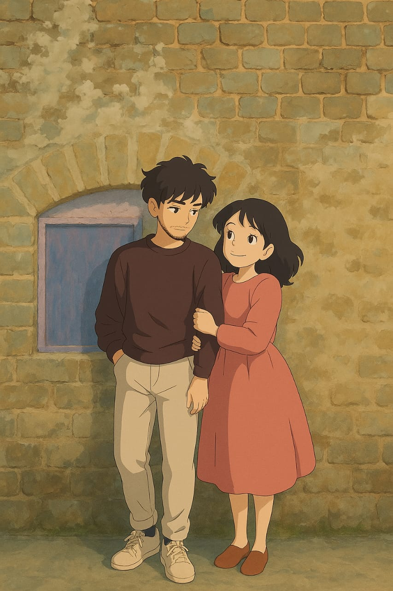

Few pieces of my heart❤️

Our firts heart❤️
Someday this will turn into reality❤️

Till then will be looking at thisüòå
This photo absolutely melts my heartü•∫
Maine ek choti si kosish ki hai ye website banane ki,
bhttt sarey errors aur fustrations k baad kese karkr possible hua hai...
bhtt difficult hai bhai otherwise mai hi dumb hoon.(mai hoon thodi si)
maine khudse kiya hai..js wala part maine nhinn kiya hai voh seekhne k liye
mujhe aur 3-4 months lagte...huhhhh aapki hi birthday jaldi aagaya..isliyeeeeee
aapkiii galtiiiiiüòò
Bhool chuk maaf kijiyegaa bachaaaa...ye karne mai hi mera hawa nikal gaya hai
nhinn pata time se complete kar paungi ki nhinn
HAPPYY BIRTHDAY TO MYYYY(SIRFF AUR SIRFF MEREEEE) SWEETTUUU(VERYY KHADOOSSS) BACHAAAAAAAA
I LOVEEEE YOUUUU BHTTTTT SARAAAA ZYADAAAA❤️
Our firts heart❤️
Someday this will turn into reality❤️
Till then will be looking at thisüòå
This photo absolutely melts my heartü•∫
Happyy Birthdayyyy mere gire huye Tiwariji !!!
I loveeeeeeeee youuuuuuuuu!!
When we first started texting, I had no idea I was gonna get this attached. I could
have never imagined that your one reply would have done this.You know as the days went
by, I could feel myself slowly falling in love with you. I think about you all the time
from the moment I wake up to the moment I fall asleep. When I think about you, I realize
that you are the one that holds the key to my heart. I used to wait for your texts like
I still do, we used to talk for like hours and still didn't get tired. You have no
Idea how much I love you .I know for a fact we are meant for each other (atleast for me) but,
maybe we won't be able to be with each other. Don't worry I won't ask you to do that. I do
understand your situation or what you're going through.
Seeing your smile, hearing your voice literally changes my whole day, Just know I will never
let go of you and my feelings will never disappear. I wish I was able to explain how wonderful
you are to me, How the sounds of your voice gives me butterflies. How hearing your laugh makes
me smile I wish I could also tell you how much I love you.I could never make you understand how
much you mean to me. I may not be the perfect girl or the most amazing or the most beautiful girl
but I'll always love you YOU for the person you were,are and will be. I'll never ever give up loving
you . I'll forever be here for you, waiting for you. Maybe in the next life or some other universe
we'll be able to be together forever.
I really wanted to be your wife, like really really wanted to. But life never really turns how we want
it to be right? I wanted to make you a cup of tea or coffee, whatever you'd have want me to make for you.
Some rotis with your favourite musur ki daal and my favourite cabbage ki sabzi, the rotis might not be
perfectly gol everytime but trust me it would have been made out of absolute love. You know I actually
have a folder of saved posts of recipes that maybe someday I'll make for you. I wanted to have a family
with you. I wanted our kids to have your beautiful eyes.
Maybe if someday I got to be lucky enough we'll stay together like couples- pati patni? We'll fulfill
some of my wishes, not all but maybe few ??
Anyways I know it would be very selfish of me to ask you for something instead of gifting you but I'll
still shamelessly do it - Please please please never till your marriage speak of breaking up. Nothing
can be fixed now or change the way I feel for you. Please atleast let me have you till you become someone
else's. You know thinking ki you'll be someone else's someday breaks me so much and the worst thing about
is that I can't even deny that fact , I have to face it every single time. I am so jealous of her- I'm
sorry but I truly am. Someone else will call you their's and I'll become the third person as usual. You'll
love someone else, she'll get everything that I've wanted but it's okay I won't be selfish I'll let you go.
I'll never ever interfere in your family, I promise that bachaa- just don't leave me now till you get married.
I'm very scared to face my future, losing you scares the fuck out of me but it's okay I'll find out a
way to manage myself.
I know I'm sounding very immature to you and I'm sorry for not being mature and stuff I too hate this
emotional side of mine but can't help it. I feel way too much about everything. I overthink every
little bit of my life and maybe that's why- I don't know that's why what happens. I don't like it.
I have said way too much- bapree!!
Anyways
Happyyyy birthdayyyy Tiwarijii ❤️
Wishing you everything that you want in your life. Wishing you the besttttt of everything.
But haan thoda sa ghussa ko shant kar lijiye...meri Tarah har koi thodi sahega haann?? Aur abhi se aapni
biwi ki side lena bandh kijiye yaar..shadi k baad karna naa..buda lagta hai mujhe...aur mujhe thoda kabhi
kabhar I love you bhi bol lijiye..kisi aur se bolne se pehle.. nhinn bhi bolenge toh kya hi kar sakti
hoon aur bachaaa mere sath baat kar liya kijiye naa, kitna wait Kari rehti hoon ki aapse baat karungi
lekin aap toh ghussa hokey bethe rehte ho; agar mai achanak se maar gayi!?! Tab buda lagega naa apko??
Ki baat kar leni chahiye thi itni baar bol rahi thi baat karne ko ... Khair chodhiye- yeh sab toh pehle
bhi bhtt baar bol chuki hoon, aapko sunna hota toh tab hi sun lete...HUHHHHH
I loveee youuuuuuuu Mr. Tanishq Tiwari❤️
I loveee youuuu bhtttttt zyadaaa ❤️
And once again
HAPPPYYYYYY BIRTHDAY!!!!üòò